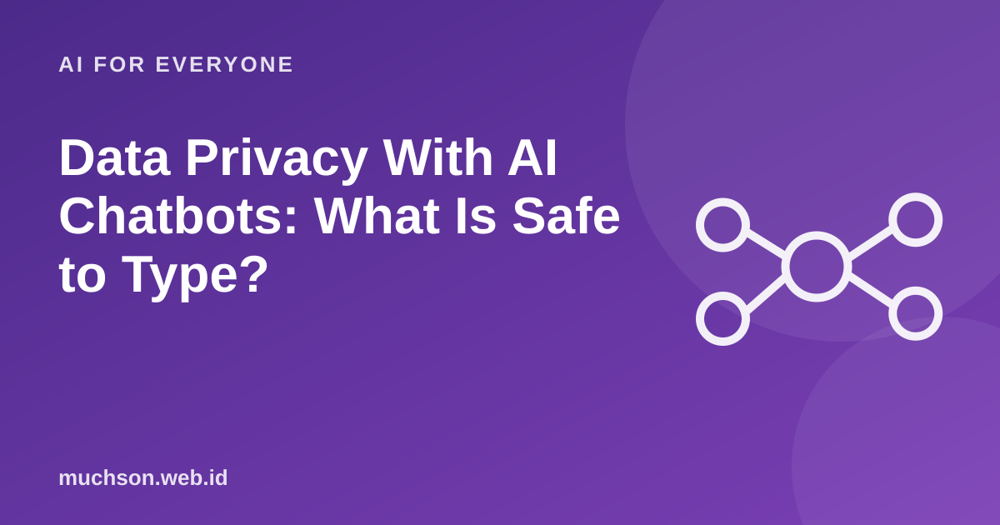

Home › Articles › AI for Everyone
AI for EveryoneData Privacy With AI Chatbots: What Is Safe to Type?
AI chatbots feel like a private conversation partner, so many people type things they would never write in public. But those conversations are processed by someone else's service. Here is what to protect.

Where does your text go?
Text description of the diagram
- You type: in an app or website
- Sent to a server: the service provider
- Processed by the model: to produce an answer
- Possibly stored: depending on policy and settings
Data you should not enter
How to disguise before typing
| Original | Disguise as |
|---|---|
| Budi Santoso, 12 Mawar St, Madiun | A customer in city X |
| Salary of Rp12,500,000 at PT ABC | A salary of about 12 million at a mid-sized company |
| ID number 3577... | [IDENTITY NUMBER] |
| A client email with the full name | The email with the name replaced by "Client A" |
Check your account settings
Responsibility
Indonesia's personal data protection law regulates how personal data is handled. If you handle other people's data (customers, students, patients), you are responsible for protecting it. Get legal advice if your business processes a lot of data.
FAQ
Is "incognito" or "temporary chat" mode really safe?
Features like that usually reduce history storage, but that does not mean the data is never processed. Read each service's explanation.
Is it safe to use a chatbot on public Wi-Fi?
An encrypted connection is relatively safe, but avoid entering sensitive data on networks you do not trust.
How do I delete my conversation history?
There is usually an account settings menu for deleting history. Check the settings of the service you use.